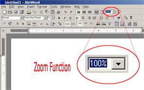

The zoom control is a tool that allows the user to position the screen to a more comfortable or customized state. By choosizing a large percentage size, you can zoom in towards the work area. If a smaller size is choosen, the work area becomes incresingly "farther away," allowing more to be seen on the screen at once, but in less detail.

Choose an approprite percentage from the drop down box. Zooming in or out from a document will not change any of the documents contents.